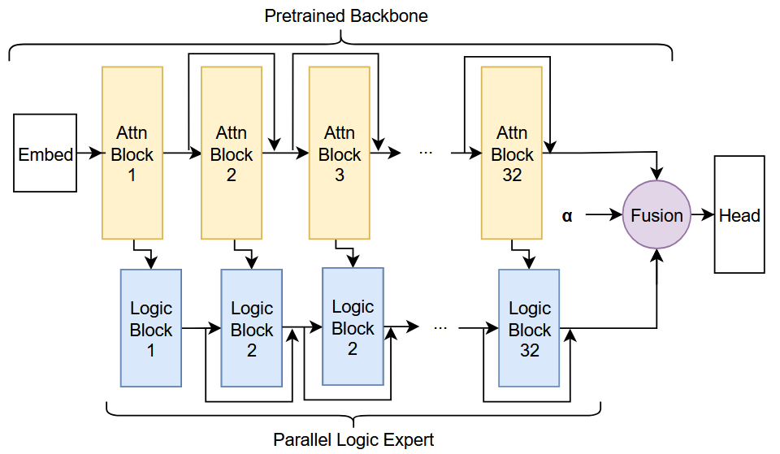
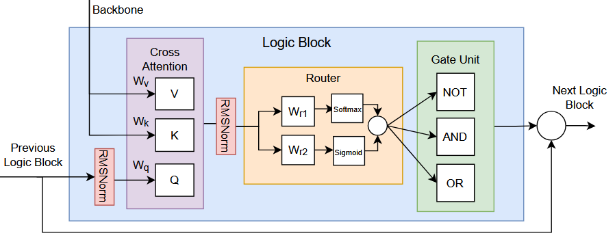

Parallel Logic Expert with
Operator Routing
A logic-augmented transformer pathway that routes token-level representations into fixed fuzzy logical operators—imposing a structured, interpretable composition over token features.
Abstract Overview
Traditional Mixture-of-Experts (MoE) architectures group networks of neural layers (MLPs) as experts, often yielding high capacity but limited structure and interpretability. This project explores an alternative pathway: a **non-invasive, parallel logic stream** that runs alongside a frozen or fine-tuned transformer backbone.
Instead of routing tokens to general-purpose MLPs, token-level representations are projected and routed to fixed, differentiable **fuzzy logical operators (AND / OR / NOT)**. The recurrent logic state is accumulated layer-by-layer and fused back into the transformer backbone before classification.
This introduces a structured, composition-aware inductive prior directly into the network. Controlled evaluations on the **ProofWriter** logical reasoning dataset show significant accuracy gains over standard baseline models under matched training budgets.
Architecture & Modular Pipeline
The logic stream is non-invasive, tapping intermediate layer representations via forward hooks and feeding a parallel depth-coupled recurrent logic state.

Parallel Stream Traversal
The pipeline taps representations directly from successive transformer backbone blocks during the forward pass:
- Non-Invasive Hooks: Keeps backbone parameters frozen or fine-tuned with LoRA, avoiding edits to complex attention internals.
- Depth-Coupled updates: The sequence-level logic state $L_t$ is initialized to zeros, then updated sequentially at each tapped layer.
- Sequence Recurrence: Token features are mixed with the current logic state via cross-attention, updating the state recurrence sequentially.
# Tap layers using PyTorch forward hooks
def _make_hook(layer_idx):
def _hook(module, inputs, output):
hidden = extract_hidden(output)
# 1. Project layer representation H -> L
init_state = logic_projection(hidden)
# 2. Update recurrent logic state
logic_state = logic_stream.layers[layer_idx](
init_state, logic_state, token_mask
)
return output
return _hook

Fuzzy Logical Primitives
To keep the operations fully differentiable, we implement fuzzy logic approximations of AND, OR, and NOT operators over continuous activations in $[0, 1]$:
- Fuzzy AND (Product): $a \wedge b = a \cdot b$
- Fuzzy OR (Probabilistic Sum): $a \vee b = a + b - a \cdot b$
- Fuzzy NOT (Complement): $\neg a = 1 - a$
- Token Window Stack: Composability is evaluated causal-wise across neighboring sequence positions (inter-token axis) or gate channels (intra-token axis) using a sliding window.
# Python fuzzy logic implementation
def and_gate(a, b):
return torch.clamp(a, 0.0, 1.0) * torch.clamp(b, 0.0, 1.0)
def or_gate(a, b):
a, b = torch.clamp(a, 0.0, 1.0), torch.clamp(b, 0.0, 1.0)
return a + b - (a * b)

Differentiable Gate Routing
At each layer, a `RoutingModule` maps projected token-level logic features to gate selection weights. It balances exploration and sparsity:
- Dense Training: Full softmax routing is applied to ensure stable gradients and gate discovery.
- Cutoff Routing: Prunes gate choices with weights below a threshold (e.g. $c=0.15$) and renormalizes to concentrate gradient updates.
- Sparse Inference: Employs Top-K sparse routing during inference to bypass inactive gates and save floating-point operations.
# Softmax routing with temperature & cutoff threshold
scores = router(token_logic) / temperature
weights = F.softmax(scores, dim=-1)
if train_mode == 'cutoff':
weights = apply_cutoff(weights, cutoff_threshold)
Residual Fusion Bridge
After traversal of all backbone layers, the final sequence logic state $L_{\text{last}}$ is integrated back into the backbone representations.
A linear bridge maps logic dimension $L$ back to hidden dimension $H$, and is fused residually with the final backbone representation:
$H_{\text{fused}} = H_{\text{last}} + \alpha \cdot \text{Bridge}(L_{\text{last}})$
- Learnable Scale ($\alpha$): A learnable parameter initializes to $0.01$, enabling the network to dynamically scale the logic pathway contribution.
- Attribution Check: Tracking $\alpha$ helps identify how much the model depends on the structured logic stream vs. backbone representations.
Linear Fusion implementation
class LinearFusionBridge(nn.Module):
def __init__(self, hidden_dim, logic_dim, alpha_init=0.01):
super().__init__()
self.bridge = nn.Linear(logic_dim, hidden_dim)
self.alpha = nn.Parameter(torch.tensor(alpha_init))
def forward(self, llm_hidden, logic_hidden, mask):
projected = self.bridge(logic_hidden) * mask.unsqueeze(-1)
return llm_hidden + self.alpha * projected
Interactive Sandbox
Play with live visual simulations of the core fuzzy math calculations and gating/routing parameters inside the network.
Fuzzy Gate Calculator
Fuzzy logic gates operate on real numbers in the $[0, 1]$ interval. Adjust the sliders representing activation states for two sequential tokens ($t_1, t_2$) to see calculated results.
Routing Distribution Simulator
Adjust raw logit projections, temperature ($\tau$), and cutoff values to visualize softmax routing weights, sparsification effects, and renormalization fallback.
Computed Routing Weights
Empirical Evaluation
Controlled comparisons on the ProofWriter reasoning dataset across 6 training epochs. Backbone is Llama-3.1-8B, with data budget and optimizers held constant.
| Epoch | Baseline Loss | Baseline Acc | Logic Loss | Logic Acc |
|---|---|---|---|---|
| 0 | 1.5740 | 27.06% | 1.0931 | 36.86% |
| 1 | 1.0666 | 46.46% | 0.8275 | 52.90% |
| 2 | 1.0622 | 46.46% | 0.8158 | 55.12% (Peak) |
| 3 | 1.0750 | 46.46% | 0.8168 | 54.68% |
| 4 | 1.0658 | 46.46% | 0.8313 | 52.48% |
| 5 | 1.0679 | 46.46% | 0.8300 | 49.44% |
| 6 | 1.0649 | 46.46% | 0.8323 | 53.54% |
Diagnostic Observations
Baseline Performance Flat
The baseline model (without a logic stream) gets stuck at 46.46% accuracy. The logic stream breaks this bottleneck, reaching 55.12% accuracy (+7.08% absolute gain).
Active Fusion Learnings
During training, the scale parameter $\alpha$ (initialized to 0.01) increases to 0.01001, demonstrating that gradients reinforce logic contributions.
Computing Parity
Peak GPU memory is tightly matched (70.65 GB for Logic vs 69.91 GB for Baseline), confirming the pathway is highly lightweight.
Citation
If you build upon this work, please cite the course writeup:
@misc{cleasbymayeda2026logicexpert,
author = {Cleasby-Mayeda, Steven},
title = {Parallel Logic Expert with Operator Routing},
year = {2026},
note = {Course project, Oregon State University AI 535}
}